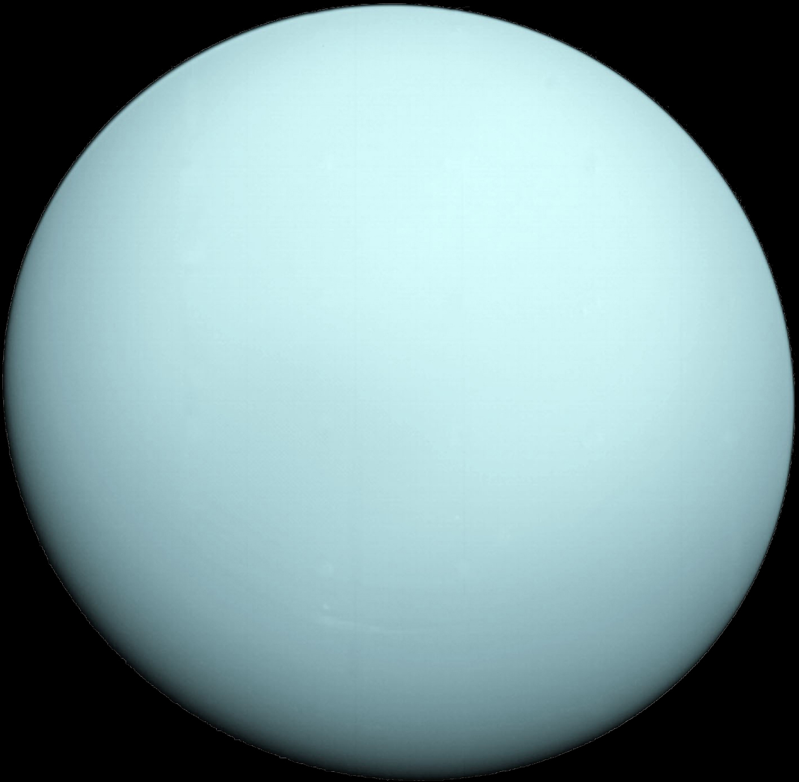

Уран
Описание
- Ура́н — планета Солнечной системы, седьмая по удалённости от Солнца, третья по диаметру и четвёртая по массе.
- Была открыта в 1781 году английским астрономом Уильямом Гершелем и названа в честь греческого бога неба Урана.
- Уран стал первой планетой, обнаруженной в Новое время и при помощи телескопа.
- Его открыл Уильям Гершель 13 марта 1781 года, тем самым впервые со времён античности расширив границы Солнечной системы в глазах человека.
- Несмотря на то, что порой Уран различим невооруженным глазом, более ранние наблюдатели принимали его за тусклую звезду.
Назад
